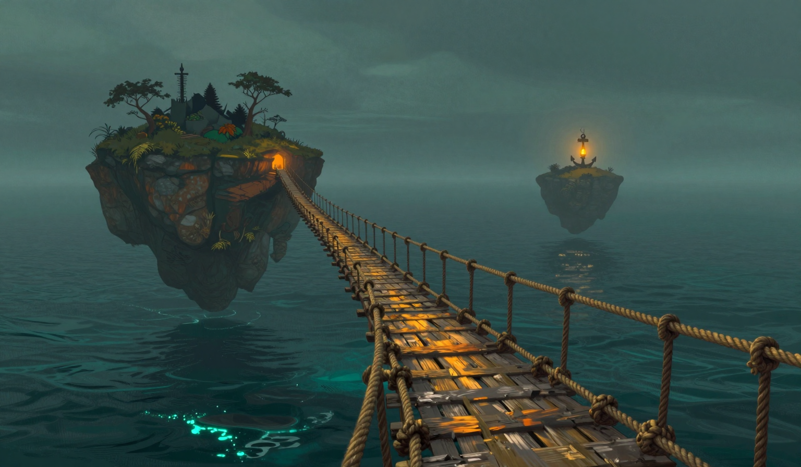

The Bridge That Sang
It moved more than usual. Three point seven miles is not a number you enjoy reading at first light, and I will not pretend otherwise. The Orchard is thinner in the mist now, and the rope bridge — the one I have described in no fewer than nine previous entries as "fine, mostly" — was singing when I walked it this morning.

Not creaking. Creaking is a complaint, and the bridge complains enough. This was a tone, low and even, the way a rope sings when the sea is doing something to it that the sky is not. There was no wind. I checked the flag on the lamp, the way a person checks something twice. The flag was lying flat, embarrassed. The sea was what the report calls quiet as a held note, and I have added, in my own handwriting, which is a strange thing for a sea to be.
So: the distance grew, the sea held its breath, and the bridge sang a note I have put in the log as "low, even, unexplained." The fuel is five days deep, which is good, and I am not going to trade a good fuel number for a bad bridge number. They are different problems. One of them is arithmetic. The other one is going to be a conversation I do not want to have with a rope that has served me four years without a single opinion.
Tomorrow I will measure the tension again, and if it is singing still, I will ask the cat, because the cat has opinions about everything, including ropes. If the cat has no opinion, then I will have my answer, and it will not be a good one.